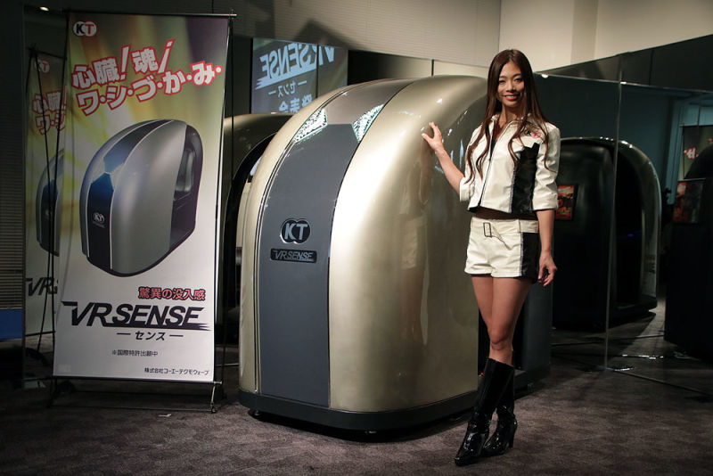
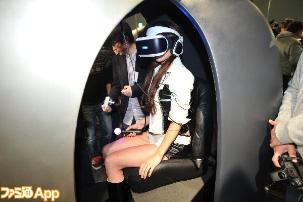

Notre société Koei Tecmo, spécialiste japonais des jeux vidéo vient de dévoiler ce qui pourrait bien être le divertissement de demain, à savoir une borne d’arcade dédiée à la réalité virtuelle et baptisée VR Sense une borne d’arcade de la réalité virtuelle qui stimule 4 des 5 sens .
La cabine VR Sense sera idéale pour équiper les salles d’arcades qui souhaiteront proposer une expérience immersive inoubliable à leurs clients, ou les salles spécialisées dans la VR. En effet, cette cabine est comme un cocon dans lequel pourra s’isoler un joueur, tout en profitant d’une expérience révolutionnaire et immersive utilisant 4 des 5 sens !
Notre cabine de jeu en VR (réalité virtuelle) est destinée aux salles d'arcade, notre borne la VR Sense stimule quatre des cinq sens: l'Odorat, le Toucher, l'Ouïe et la Vue.
Quelles sont les particularités de notre cabine de réalité virtuelle totale ?
Tout d’abord, son siège, capable de bouger vers le haut, le bas ou bien sur les côtés. Plus original, la cabine est dotée d’une fonction vent pour donner la sensation au joueur de courir en plein air et de prendre de la vitesse. Une fonction chaud et froid peut modifier la température de l’habitacle, dans lequel la réalité virtuelle peut également duper vos sens en vous donnant la réelle impression qu’il pleut, qu'il neige ou qu'il fait chaud.
Côté odeurs, le VR Sense est capable de répliquer une panoplie de senteurs, que le jeu vous emmène au coeur d’une forêt ou d’un champ de bataille comme des senteurs boisées, de montagne enneigée ou de désert aride.
Pour le toucher, nous avons fait plus simple en motorisant tout le siège afin que ce dernier puisse s'incliner dans certaines directions. Les vibrations ne sont pas oubliées. C'est une ceinture passant par dessus le torse et la taille, intégrée à la cabine qui se charge de reproduire les chocs, voire de simuler des insectes qui vous grimpent dessus.
Une vidéo de présentaion et de démo de la borne VR Sense sera bientot disponible.
Koei Tecmo Games (コーエーテクモゲームス) est une entreprise fondée le 1er avril 2011 qui exerce son activité dans le développement de jeu vidéo, née de la fusion des entreprises japonaises Tecmo et Koei. Cinq filiales, en Chine (Tianjin, Pékin), au Vietnam, Canada et Singapour sont placées sous la tutelle de Tecmo Koei Games.
Koei Tecmo Games connu pour ses nombreux jeux:
Se lance désormais dans la Réalité Virtuelle avec la VR Sense et nous ésperons continuer de pouvoir vous faire rever.